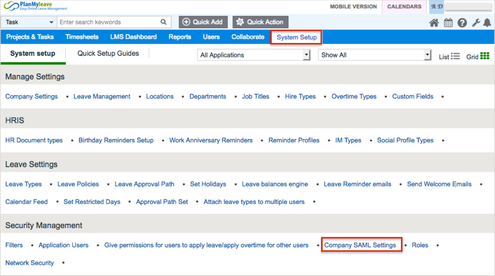
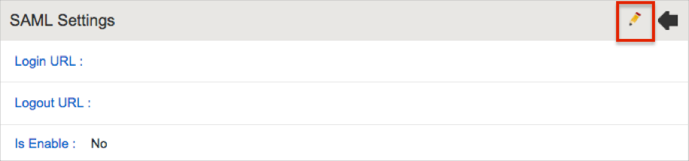
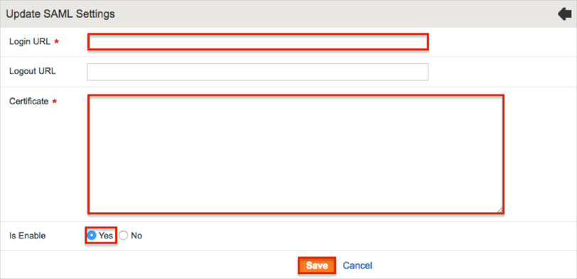
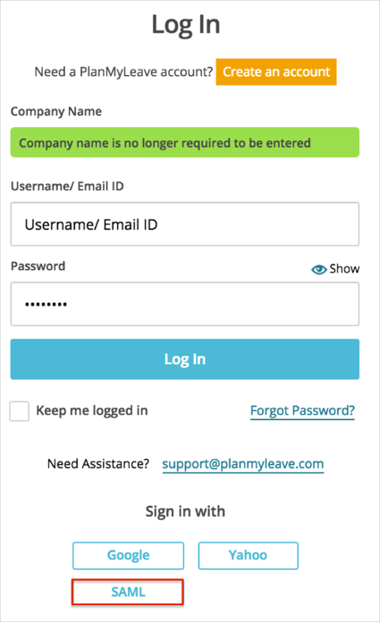

Login to PlanMyLeave as an administrator.
Navigate to System Setup > Security Management > Company SAML Settings:

Click the Edit icon:

Enter the following information:
Login URL: Copyi and paste the following:
Sign into the Okta Admin Dashboard to generate this variable.
Certificate: Copy and paste the following (PEM text format):
Sign into the Okta Admin Dashboard to generate this variable.
Set Is Enable to Yes.
Click Save.

Notes:
SP-initiated flows are supported.
IDP-initiated flows and Just In Time (JIT) provisioning are not supported.
Open the following URL: https://[yourCompanyName].planmyleave.com/.
Click Sign in with SAML:
